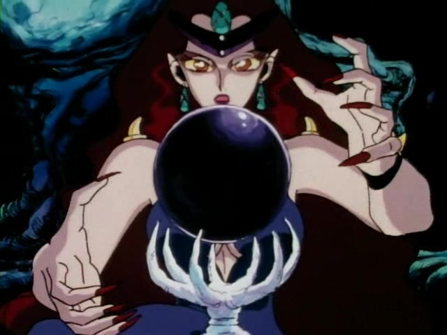
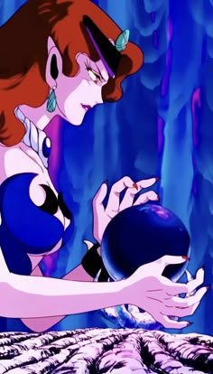
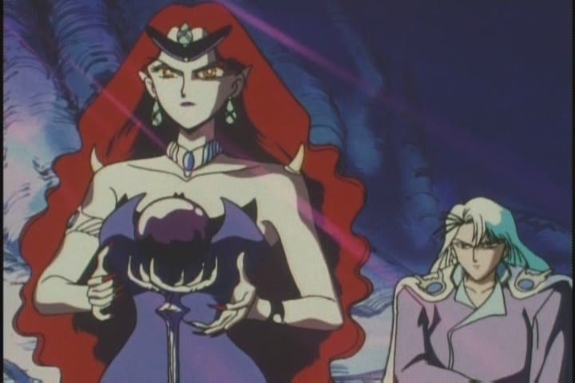
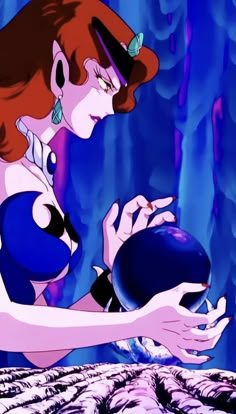
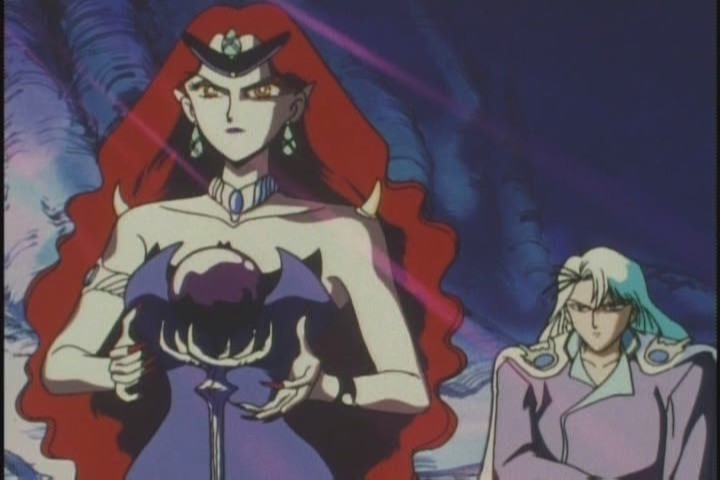

<- Повернутися на головну сторінку
<- Красуня воїн Сейлор Мун
<- Вороги
Королева Берилл

Головна інформація
Історія:
Королева Берилл - безжалісна та жорстока правителька Темного королівства. Переслідує незмінну ціль: захопити весь світ. У часи панування Срібного тисячоліття вчинила воєнний напад на Місяць, співпрацюючи з Королем Металією. Війна закінчилася смертю Ендіміона та юної Сереніті , повним знищенням життя на Місяці, проте Королева Сереніті змогла на довгі віки заточити Берилл, Металію та семерих найстрашніших чудовиськ в глибинах Землі. Вони пробудилися у ХХ столітті і почали знову намагатися завоювати світ. Врешті-решт, була переможена Сейлор Мун
Галерея
 


